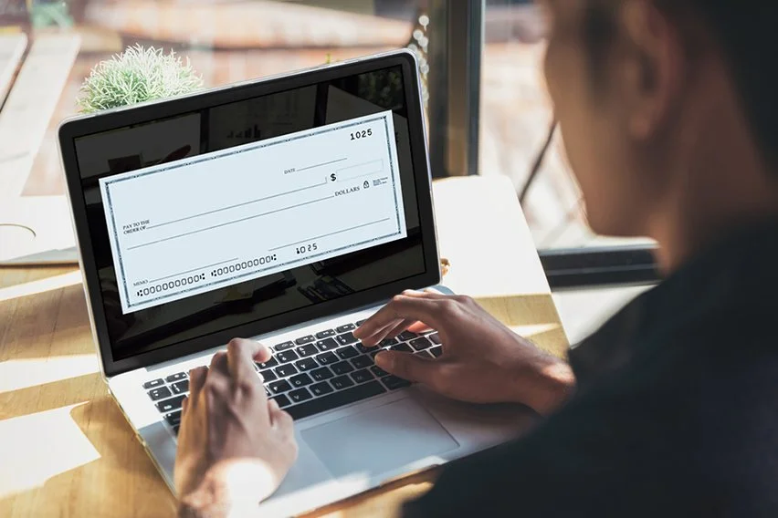
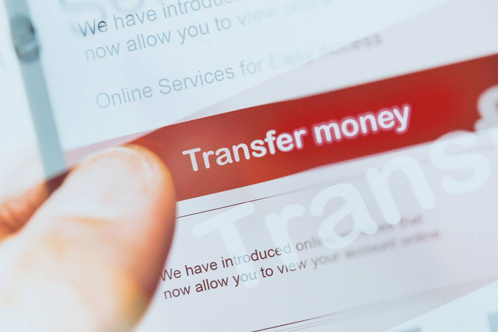

grocery store website is a very helpfull for your grocery products.this website gives you a very fresh and organic products to you for your good health.
shop now
Online payment allows you to pay money via the internet. Buyers will use this type of payment when they purchase goods online or offline. They can use different types of online payment methods, including debit/credit cards, wire transfers, net banking, and digital wallets. Online payments can be done at the discretion of consumers. They can pay online to e-commerce stores to buy clothing or other items, subscriptions, mobile, DTH recharges, etc.
Four entities will be involved in the online payment process, such as the consumer, merchant or business, the consumer's bank, and the bank of the merchant or business. Although, more than one entity is involved during the online payment process, the entire process is electronic and completed within seconds..
With the advent of the internet, online payments have become extremely popular among buyers and sellers, owing to their benefits. They help consumers considerably save much of their time, allowing the process to be completed quickly and efficiently. Buyers do not need to handle physical cash, as online payments allow them to make cashless purchases. Consumers can buy their preferred goods and pay for them with the greatest security by propelling a payment confirmation message to consumers.
When it comes to knowing online payment meaning, in essence it is an exchange of currency, electronically through the internet. The process in these payments is the transfer of money from the bank account, debit card, or credit card of a customer to the bank account of a seller. This online e-payment is handy for purchasing the merchandise or services of sellers.
Buyers and sellers make online transactions with the help of online payment apps. On the buyers' side, the transaction is to purchase goods and services and products or services deliverance from the sellers' end. These easy online payment options involve several steps while transferring a buyer's funds and seller's offerings. Both parties will use some online payment apps to complete their transactions successfully.
The World Wide Web lets people know which is the best online payment app. Different online payment methods have become extremely popular among people, offering many benefits to them. Paying money online through trusted platforms is the safest and best online payment mode amongst buyers and sellers. Some of the common types of online payments are as follows:.
.png)
Credit cards are one of the payment sources in the list of payment methods online. These online payment modes allow cardholders to buy their preferred merchandise and services. Credit cards are one of the alternative online payment methods, offering a higher rate of cash back. They allow users to have little to no liability for fraudulent fees. They help users get reward points that they can redeem for several purposes.
Paying with a credit card makes it easier to avoid losses from fraud. When a thief uses your debit card, the money is missing from your account instantly. Legitimate expenses for which you've scheduled online payments or mailed checks may bounce, triggering insufficient funds fees and affecting your credit.
Credit cards come in different types, such as Mastercard, Visa, Discover, and American Express. All the handiest online payment methods in India. However, Mastercard and Visa credit cards have global recognition, but Discover and American Express cards also have extensive coverage. Similarly, each of these credit cards provides users with unique benefits. They will provide users with a bounty of benefits, including travel insurance, rental car insurance, and purchase protection. However, the benefits may count on the discretion of credit unions and banks offering these credit cards.
Banks will issue debit cards to their account holders as part of their online payment services. They allow them to use their cards to make purchases online. The banks will deduct the amount automatically from the cardholders' bank accounts. Similar to a credit card payment system, the debit card online payment system is one of the most preferred online payment options among people. The major ones are Visa, RuPay, and MasterCard. Visa cards are the most acceptable cards by worldwide merchants for all online and digital transactions. Debit cards provide an easy way for people who are seeking to make online payments.
They offer the best online payment solutions, which makes them the most sought-after payment tool amongst global buyers. They provide immediate money access to users to perform many online transactions comfortably. Similar to credit cards, debit cards are extensively accepted online.
.png)
OThe most prevalent online payment method is third-party transfer. It entails making out and depositing a sum into the account of a third party that receives the payment. However, users need to know how to make payments online through this transaction mode.
Third-party transfer in banking allows banks to manage it manually or use digital technology to complete it. Buyers and sellers can send and receive money through these services. They facilitate users to avail of these services online or through their mobile phones by attaching their bank accounts to a third-party payment service. These services help vendors that wonder how to accept online payments on a website, allowing them to acknowledge payments without opening a merchant account. However, they may need to open a bank account to hold cash received through card payments.
Electronic cheques are one of the most popular online payment processing systems. They will deduct money from a checking account. This online payment mechanism eradicates the need for users to prepare their cheques in written form, helping sellers deposit them into their bank accounts. Electronic cheques have many security features compared to traditional paper checks, including verification, digital signatures, public key cryptography, and encryption.
Owners of these checks can perform a function similar to what they can carry out through a traditional paper check. The benefit of using these e-checks is that they need fewer steps to process them. The processing costs of e-cheques are comparatively lower than the standard paper checks. The direct deposit system offered by several employers is one of the more regularly used versions of the e-cheques.

Transactions involved in a bank transfer are the same as debit card transactions. This transfer method transfers money from one bank account to another, so a debit card is not required physically. Bank transfers provide a faster and safer form of payment than other modes of transactions, such as paying or withdrawing money from a bank account.
People can also set up online payment system on their telephones. If you are wondering how to online payment, you need to access your online account and choose the option for making your payments. Some banks also provide their account holders with online payment apps, allowing them to transfer funds.

feel free to follow us on our social media handlers all the links are given below.
subscribe for latest updates